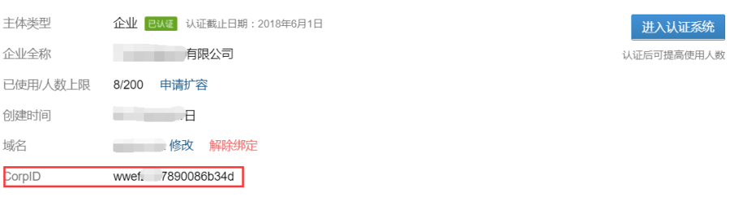
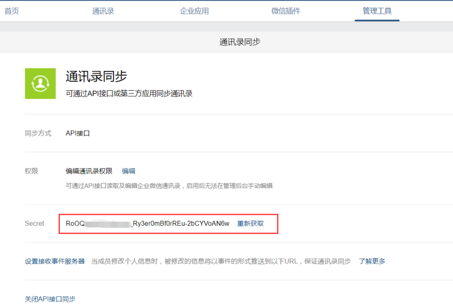
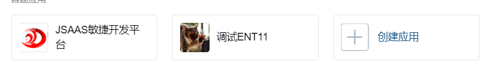
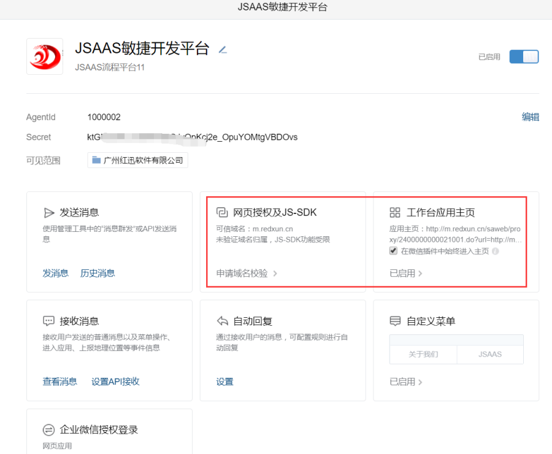
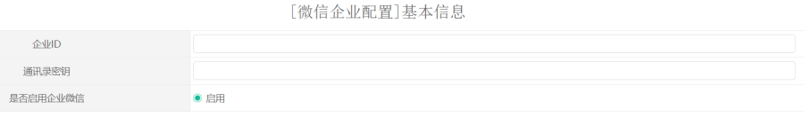
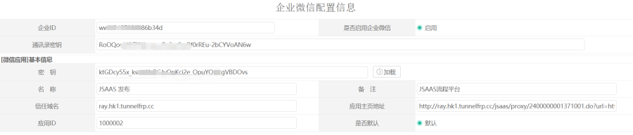
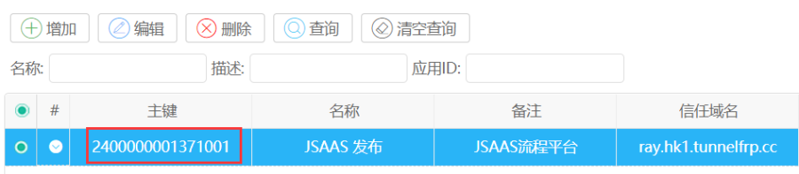
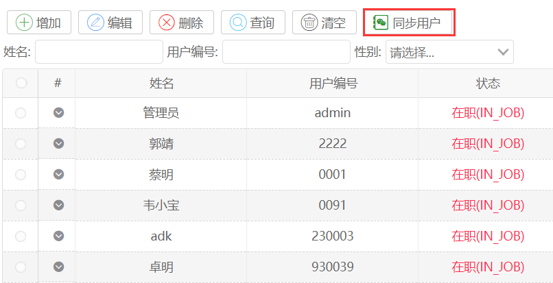

功能说明
企业微信是面向企业开发的一种服务。和公众号不同，他可以实现无限制给内部用户推送消息，有部分的办公应用和简单的审批功能，集成企业微信，我们可以实现给成员推送消息。整合平台的手机应用，而不用显示登录，作为企业办公的一个入口点。
在平台中我们整合微信主要实现了：
1企业微信用户同步。
2.企业微信消息通知。
3.微信手机端的打通，集成了企业微信的JSSDK功能,支持拍照定位等功能。
操作步骤
1.注册企业微信
在企业信息平台注册企业微信帐号，这个是必须做的，这个过程就不描述了。
2.微信操作
2.1 获取CORPID
corpId ：一个企业微信有一个corpId。
进入我的企业。

2.2 获取通讯录密钥

这个我们密钥需要使用到。另外我们需要做用户同步，即将平台租户的用户同步到企业微信。需要开启API同步接口。
2.3 增加一个应用

点击创建应用。

1.配置网页授权及JS-SDK，这里需要配置一个域名。
2.工作台应用主页
如果配置这个，那么在工作台点击这个应用，那么将直接跳转到配置的地址。
这个配置地址的方式可以使用如下地址。
http://m.redxun.cn/saweb/proxy/2400000000021001.do?url=http://m.redxun.cn/saweb/vuemobile/index.html
这个 2400000000021001是平台增加的应用ID。url 是需要跳转到的手机端应用地址。
2.4 平台中配置企业微信
点击“系统配置“->“企业微信“->“企业微信“

一个租户只能配置一个企业微信。
企业ID：是上面的提到的corpId
通讯录密钥：这里配置上面的通讯录密钥。
2.6 平台中可以配置一个或者多个应用。

输入应用的密钥后点击加载按钮，会从企业微信加载应用信息。配置完成后点击保存。

保存后我们取得这个主键，重新填写微信应用配置的URL。
http://m.redxun.cn/saweb/proxy/2400000001371001.do?url=http://m.redxun.cn/saweb/vuemobile/index.html
这样企业微信就配置完了。
2.7 同步用户到企业微信
配置了企业微信后，我们可以在用户管理处，看到同步按钮。点击同步就可以将租户的用户和行政组织同步到企业微信。
